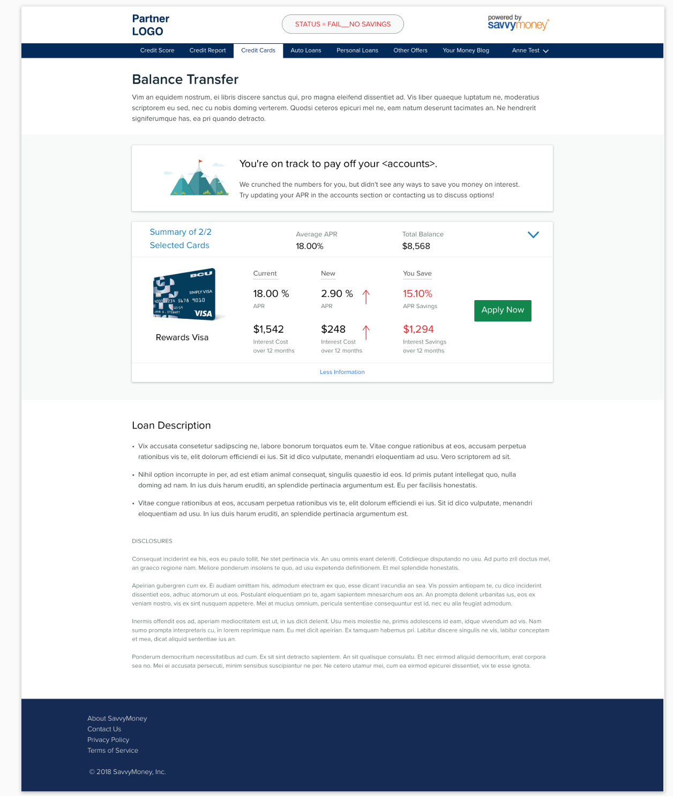

“The simplicity of the site. Just enough information presented and very easy to navigate.”
A lot of free credit score solutions in the market make money by cross-selling credit cards and loans from big financial institutions (FI's) or 3rd party vendors. This poses as risk to credit unions and small banks as they lose wallet share despite competitive rates.
SavvyMoney allows partner FI's to market their loan offers directly to their members inside the credit score application using its powerful recommendation engine. This not only adds to a marketing channel for partners but also allow their users to explore savings options and avail the cheaper rates that most credit unions are known for.
Originally, there was a single page on the SavvyMoney application with all the offers listings. There was a small input selector for each product type to capture user details and a carousel to list other offer listings in the same category.
There were a few challenges with the existing page.
The primary motivation was to fix the user experience of the offers area. As the project unfolded, larger questions and concerns came into light which led to simplification of this complex product feature. The larger offer page undertaking was driven by:
This has been a larger undertaking which involved designing and building individual pages and functionality for different product types -
The project kickstarted as a partner request to support "Student Loans" category. This was undertaken as an opportunity to redo the "Savings" area with a more consolidated page per product type. Each of the product types were split into individual projects and underwent through their independent design and development cycles.
I wore many hats for this project other than leading the UX efforts. I acted as a researcher and business analyst to identify feature requirements and worked directly with the partners and the development team to spec out, design and build the functionality.
These pages were built one by one, such that certain nuances particular to the product type could be addressed properly. The process for building these page involved:
Since the pages were built one-by-one, this was truly an iterative project. Every next product page was informed by the performance of the previous pages and the improvements were implemented across all the pages.
This project is still ongoing with iterative changes and enhancement to features. As of Q3 2018, the improved functionality and UI was in production for Auto Loans, Student Loans, Personal Loans, Credit Cards, Home Loans and a generic offer page for all other offer types, both in web and mobile.
Page Anatomy An interesting attribute of offers within SavvyMoney is that they are from one partner. This means, the partner will only have a few loans of each type. For example, some financial institution only carry 1 credit card, or only offer 3–4 loan term for auto loan. This knowledge was important in deciding how to layout the page. Each offer type had its own characteristics and nuances. While not all the details can be covered here, some common components are discussed below. New Loans The goal on new loan pages was to let the user explore monthly payments for different loan terms while letting them compare offers. The key sections of page include: User workspace to calculate their monthly payment One interaction that was added to the loan amount field was the ability to allow users to add/reduce loan amounts in steps of $500 while giving the ability to edit the value. Compare section to compare all available eligible offers. Loan benefits section where custom text per partner can be added to the page. Disclosures section where customized disclosures and disclaimers can be added to the page. Refinance/Debt Consolidation pages This was an interesting purpose of some of the offer types. While there are many cross-selling platforms out there, SavvyMoney has a unique positioning, since it can compare loan options against user’s existing loans and truly help them see money saving options. Thus, key principle for these pages was transparency. - Visibility into to existing loan, - The cost benefit of refinance/consolidation and - The ability to compare all offers in one place. Thus key sections of page contained: Existing loan selection which has information about user’s loan as reported in their credit reports —remaining balance, remaining loan term and monthly payment. APR was calculated using the available information. A user workspace to see one loan at a time and compare their monthly savings, interest savings and APR reductions. Compare section to compare all available eligible offers. Loan benefits section where custom text per partner can be added to the page. Disclosures section where customized disclosures and disclaimers can be added to the page. Workflow Diagrams The diagrams were drawn based on usage data and user’s credit. For example, for auto loans it was found that only 60% of the representative dataset had an open auto loan with a balance > $0. Thus, diagram were improved and fallback scenarios were added for such users. For each subsequent, offer page, the diagrams were improved for consistency in scenarios, code and design. Fallback Scenarios These were states which the user will see if they don’t qualify for an eligible loan, for example, due to their low score, location or loan amount. Also, these states included any interruption to service or any unknown states. The idea was to show relevant information to the users so that they can act on it appropriately.  Calculation model Calculation models were made for developers to build the backend logic. Each product type had its own unique characteristics which influenced the calculations of monthly payments, interest amount and overall savings.Being an outsider to the fin-tech industry, this project helped me get the exposure to the world of financial institutions, the nuances of how, for example, credit cards or Auto loans works, what factors are important for the lenders and what goes into the process of loan underwriting. Who new your ownership of your house can pay for you next house!! Or you could get more than the value of your car as an auto loan to pay for your debt since APR of any asset based loan is much lower than a personal loan!
I also built model calculators which could calculate credit card payments, monthly loan payments and pay-off loan terms.
I collaborated with 2 remote teams based out of the country across different time-zones and truly experienced round-the-clock work concept. It not only helped me improve my communication skills (some of the team that I worked with did not have English as their first language) but also appreciate the importance of designer-developer collaboration for a successful project.
My most important takeaway from the project was the importance of consistency - not only in UI, across different components, content, layout, etc. but also code - the api calls being returned, consistency in calculation results, number of decimal points, calculation in cents vs dollars, etc. This is when I took a step back and evaluated all pages for inconsistencies. This led way to setup a Design System at SavvyMoney - OCTANE.
It is easy to design and build in a silo when you are focussed on task based output, losing the sight the bigger picture. It is then when you overstep consistency for getting the work done.